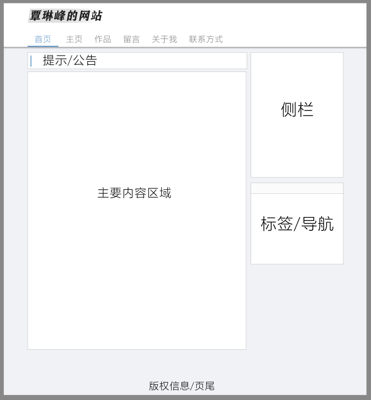

网站设计原稿
现在的网站都太花里胡哨了，所以想做一个干净点的~

这是一个帮助进行快速插件开发的控制反转(IoC)框架。是我所有开发经验的一个总结。
我自开发spigot（早期是bukkit）至今已经差不多两年时间，可以说是自我入门至今都在开发spigot。在两年中我一直都在开发一套能够帮助我进行快速开发的库或框架，实际上这已经是我第五版的开发工具了，但前四版都是云云STATIC方法，而在这版中我带入了设计与框架，并将之前的精华凝结于此，让其在效果上能有一个质上的飞跃。
@Github: https://github.com/HyrKG/FastSpigot
@中文文档: https://fastspigot.doc.hyrkg.cn/
@Github: https://github.com/HyrKG/FastSpigot
@中文文档: https://fastspigot.doc.hyrkg.cn/